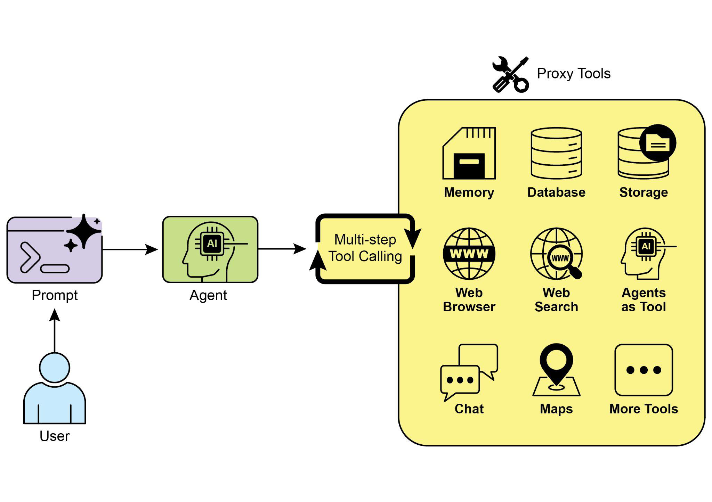
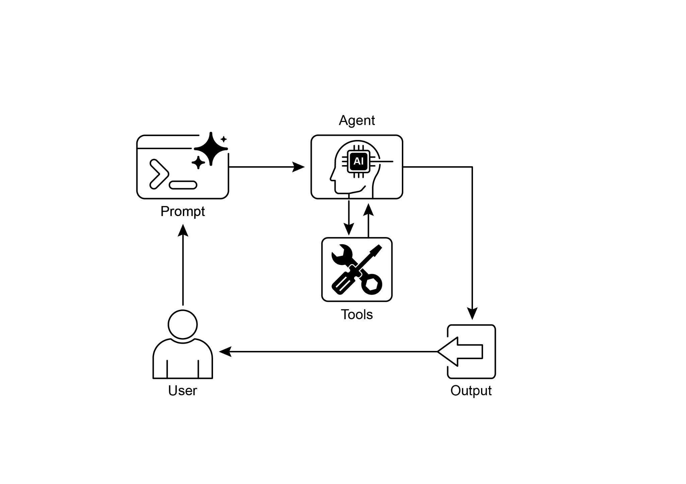

读书 · Agentic Design Patterns · 中英对照
第 5 章 · 工具使用 Tool Use (Function Calling)
Chapter 5: Tool Use (Function Calling) · 《Agentic Design Patterns》 · Antonio Gulli · 2025
讲智能体如何通过函数调用调用外部API、数据库与代码，突破LLM静态知识限制。
← 返回导读 原书 PDF 上一章:第4章 下一章:第6章
本章要点
① 工具调用流程：定义工具→LLM决策→生成结构化调用→执行→回传结果 ① 工具不止函数，还包括API、数据库查询、委派其他智能体 ① LangChain用@tool装饰器与AgentExecutor简化工具绑定 ① Google ADK提供Google Search、代码执行、Vertex AI Search等预置工具
本章一图流
定义工具声明函数/API/数据库等能力→LLM决策模型判断是否调用及调用哪个→结构化调用输出参数化的调用指令→执行工具外部系统实际运行并返回→回传结果结果注入上下文继续推理
工具调用让LLM突破静态知识，按定义→决策→调用→执行→回传闭环运行。
原书插图


本章划线句
划线句(逐字校验)
"It allows the LLM at the core of the agent to decide when and how to use a specific external function based on the user's request or the current state of the task."
为什么值得划线:点明工具使用的核心：由LLM自主决定何时调用
划线句(逐字校验)
"This pattern is fundamental because it breaks the limitations of the LLM's training data and allows it to access up-to-date information"
为什么值得划线:概括工具模式的根本价值：突破训练数据局限
划线句(逐字校验)
"Tool Use is what transforms a language model from a text generator into an agent capable of sensing, reasoning, and acting in the digital or physical world"
为什么值得划线:一句话定义工具使用对智能体的意义
正文(英中对照)
"Chapter 5: Tool Use (Function Calling) Tool Use Pattern Overview So far, we've discussed agentic patterns that primarily involve orchestrating interactions between language models and managing the flow of information within the agent's internal workflow (Chaining, Routing, Parallelization, Reflection). However, for agents to be truly useful and interact with the real world or external systems, they need the ability to use Tools. The Tool Use pattern, often implemented through a mechanism called Function Calling, enables an agent to interact with external APIs, databases, services, or even execute code."
第5章：工具使用（函数调用）工具使用模式概述 到目前为止，我们讨论的智能体模式主要涉及编排语言模型之间的交互，以及管理智能体内部工作流中的信息流（链式、路由、并行化、Reflection）。然而，要让智能体真正有用并与现实世界或外部系统交互，它们需要具备使用工具的能力。工具使用模式通常通过一种称为函数调用（Function Calling）的机制实现，使智能体能够与外部 API、数据库、服务交互，甚至执行代码。
导读注:从内部编排转向外部交互，函数调用是智能体连接现实世界的关键机制。
"It allows the LLM at the core of the agent to decide when and how to use a specific external function based on the user's request or the current state of the task. The process typically involves: 1. Tool Definition: External functions or capabilities are defined and described to the LLM. This description includes the function's purpose, its name, and the parameters it accepts, along with their types and descriptions. 2. LLM Decision: The LLM receives the user's request and the available tool definitions. Based on its understanding of the request and the tools, the LLM decides if calling one or more tools is necessary to fulfill the request. 3."
它允许作为 agent 核心的 LLM 根据用户请求或任务当前状态，决定何时以及如何使用特定的外部函数。该过程通常包括：1. 工具定义（Tool Definition）：向 LLM 定义并描述外部函数或能力。该描述包括函数的用途、名称、接受的参数及其类型和说明。2. LLM 决策（LLM Decision）：LLM 接收用户请求和可用的工具定义。基于对请求和工具的理解，LLM 决定是否需要调用一个或多个工具来满足请求。3.
导读注:核心在于由 LLM 自主决定何时调用外部工具，而非硬编码调用逻辑。
"Function Call Generation: If the LLM decides to use a tool, it generates a structured output (often a JSON object) that specifies the name of the tool to call and the arguments (parameters) to pass to it, extracted from the user's request. 4. Tool Execution: The agentic framework or orchestration layer intercepts this structured output. It identifies the requested tool and executes the actual external function with the provided arguments. 5. Observation/Result: The output or result from the tool execution is returned to the agent. 6."
函数调用生成（Function Call Generation）：如果 LLM 决定使用工具，它会生成结构化输出（通常是 JSON 对象），指定要调用的工具名称以及从用户请求中提取的、要传递给该工具的参数（arguments）。4. 工具执行（Tool Execution）：agentic 框架或编排层拦截此结构化输出。它识别所请求的工具，并使用提供的参数执行实际的外部函数。5. 观察/结果（Observation/Result）：工具执行的输出或结果返回给 agent。6.
导读注:拆解工具调用闭环：结构化输出是 LLM 与外部函数之间的关键接口。
"LLM Processing (Optional but common): The LLM receives the tool's output as context and uses it to formulate a final response to the user or decide on the next step in the workflow (which might involve calling another tool, reflecting, or providing a final answer). This pattern is fundamental because it breaks the limitations of the LLM's training data and allows it to access up-to-date information, perform calculations it can't do internally, interact with user-specific data, or trigger real-world actions. Function 1 calling is the technical mechanism that bridges the gap between the LLM's reasoning capabilities and the vast array of external functionalities available."
LLM 处理（可选但常见）：LLM 接收工具的输出作为上下文，并利用它来制定对用户的最终响应，或决定工作流中的下一步（这可能涉及调用另一个工具、进行 Reflection 或提供最终答案）。这种模式之所以基础，是因为它打破了 LLM 训练数据的局限，使其能够访问最新信息、执行其内部无法完成的计算、与用户特定数据交互，或触发现实世界的操作。Function 1 calling 是弥合 LLM 推理能力与可用的大量外部功能之间差距的技术机制。
导读注:点明工具调用为何是 LLM 突破训练数据局限的关键机制。
"While "function calling" aptly describes invoking specific, predefined code functions, it's useful to consider the more expansive concept of "tool calling." This broader term acknowledges that an agent's capabilities can extend far beyond simple function execution. A "tool" can be a traditional function, but it can also be a complex API endpoint, a request to a database, or even an instruction directed at another specialized agent. This perspective allows us to envision more sophisticated systems where, for instance, a primary agent might delegate a complex data analysis task to a dedicated "analyst agent" or query an external knowledge base through its API."
虽然“函数调用”(function calling)能贴切地描述调用特定的预定义代码函数,但考虑更宽泛的“工具调用”(tool calling)概念会更有用。这个更宽泛的术语承认,agent 的能力可以远远超出简单的函数执行。一个“工具”可以是传统函数,但也可以是一个复杂的 API 端点、一次对数据库的请求,甚至是一条指向另一个专用 agent 的指令。这一视角让我们能够设想更复杂的系统,例如,一个主 agent 可以把复杂的数据分析任务委托给一个专门的“分析师 agent”,或通过其 API 查询外部知识库。
导读注:从 function calling 到 tool calling,工具的外延被大幅拓宽,为多 agent 协作铺路。
"Thinking in terms of "tool calling" better captures the full potential of agents to act as orchestrators across a diverse ecosystem of digital resources and other intelligent entities. Frameworks like LangChain, LangGraph, and Google Agent Developer Kit (ADK) provide robust support for defining tools and integrating them into agent workflows, often leveraging the native function calling capabilities of modern LLMs like those in the Gemini or OpenAI series. On the "canvas" of these frameworks, you define the tools and then configure agents (typically LLM Agents) to be aware of and capable of using these tools. Tool Use is a cornerstone pattern for building powerful, interactive, and externally aware agents."
从"工具调用"(tool calling)的角度来思考，能更好地把握 agent 作为编排者(orchestrator)在多样化数字资源与其他智能实体生态中所能发挥的全部潜力。LangChain、LangGraph 和 Google Agent Developer Kit (ADK) 等框架为定义工具并将其集成到 agent 工作流中提供了有力支持，通常借助 Gemini 或 OpenAI 系列等现代 LLM 的原生函数调用(function calling)能力。在这些框架的"画布"上，你先定义工具，再配置 agent（通常是 LLM Agent），使其能够感知并使用这些工具。Tool Use 是构建强大、可交互且具备外部感知能力的 agent 的基石模式。
导读注:强调工具调用是 agent 编排生态资源的核心范式，并点出主流框架的原生支持。
"Practical Applications & Use Cases The Tool Use pattern is applicable in virtually any scenario where an agent needs to go beyond generating text to perform an action or retrieve specific, dynamic information: 1. Information Retrieval from External Sources: Accessing real-time data or information that is not present in the LLM's training data. ● Use Case: A weather agent. ○ Tool: A weather API that takes a location and returns the current weather conditions. ○ Agent Flow: User asks, "What's the weather in London?", LLM identifies the need for the weather tool, calls the tool with "London", tool returns data, LLM formats the data into a user-friendly response. 2."
实际应用与用例 Tool Use 模式几乎适用于智能体需要超越文本生成、执行操作或检索特定动态信息的任何场景：1. 从外部来源检索信息：访问 LLM 训练数据中不存在的实时数据或信息。● 用例：天气智能体。○ 工具：一个接收地点并返回当前天气状况的天气 API。○ 智能体流程：用户问“伦敦天气怎么样？”，LLM 识别出需要使用天气工具，以“London”调用该工具，工具返回数据，LLM 将数据格式化为用户友好的回复。2.
导读注:展示 Tool Use 模式如何让 LLM 调用天气 API 获取实时数据，突破训练数据限制。
"Interacting with Databases and APIs: 2 Performing queries, updates, or other operations on structured data. ● Use Case: An e-commerce agent. ○ Tools: API calls to check product inventory, get order status, or process payments. ○ Agent Flow: User asks "Is product X in stock?", LLM calls the inventory API, tool returns stock count, LLM tells the user the stock status. 3."
与数据库和 API 交互：2 对结构化数据执行查询、更新或其他操作。● 用例：一个电子商务 agent（智能体）。○ 工具：用于检查产品库存、获取订单状态或处理支付的 API 调用。○ Agent 流程：用户问“产品 X 有库存吗？”，LLM 调用库存 API，工具返回库存数量，LLM 告知用户库存状态。3.
导读注:展示 agent 如何通过 API 调用完成库存查询的完整闭环。
"Performing Calculations and Data Analysis: Using external calculators, data analysis libraries, or statistical tools. ● Use Case: A financial agent. ○ Tools: A calculator function, a stock market data API, a spreadsheet tool. ○ Agent Flow: User asks "What's the current price of AAPL and calculate the potential profit if I bought 100 shares at $150?", LLM calls stock API, gets current price, then calls calculator tool, gets result, formats response. 4."
执行计算与数据分析：使用外部计算器、数据分析库或统计工具。● 用例：一个金融智能体（financial agent）。○ 工具：一个计算器函数、一个股市数据 API、一个电子表格工具。○ 智能体流程：用户问“AAPL 当前价格是多少，如果我以 $150 买入 100 股，计算潜在利润？”，LLM 调用股票 API，获取当前价格，然后调用计算器工具，得到结果，格式化响应。4.
导读注:展示工具调用链：LLM 先查股价再算利润，是智能体编排的典型示例。
"Sending Communications: Sending emails, messages, or making API calls to external communication services. ● Use Case: A personal assistant agent. ○ Tool: An email sending API. ○ Agent Flow: User says, "Send an email to John about the meeting tomorrow.", LLM calls an email tool with the recipient, subject, and body extracted from the request. 5. Executing Code: Running code snippets in a safe environment to perform specific tasks. ● Use Case: A coding assistant agent. ○ Tool: A code interpreter. ○ Agent Flow: User provides a Python snippet and asks, "What does this code do?", LLM uses the interpreter tool to run the code and analyze its output. 6."
发送通信：发送电子邮件、消息，或向外部通信服务发起 API 调用。● 用例：个人助理 agent。○ 工具：电子邮件发送 API。○ Agent 流程：用户说：“给 John 发一封关于明天会议的邮件。”LLM 调用电子邮件工具，收件人、主题和正文从请求中提取。5. 执行代码：在安全环境中运行代码片段以执行特定任务。● 用例：编码助理 agent。○ 工具：代码解释器。○ Agent 流程：用户提供一段 Python 代码片段并问：“这段代码是做什么的？”LLM 使用解释器工具运行代码并分析其输出。6.
导读注:列举 agent 的典型工具用例，LLM 从自然语言中抽取参数并调用工具是核心模式。
"Controlling Other Systems or Devices: Interacting with smart home devices, IoT platforms, or other connected systems. ● Use Case: A smart home agent. ○ Tool: An API to control smart lights. ○ Agent Flow: User says, "Turn off the living room lights." LLM calls the smart home tool with the command and target device. Tool Use is what transforms a language model from a text generator into an agent capable of sensing, reasoning, and acting in the digital or physical world (see Fig. 1) 3"
控制其他系统或设备：与智能家居设备、IoT 平台或其他互联系统交互。● 用例：智能家居 agent。○ 工具：用于控制智能灯的 API。○ Agent 流程：用户说“关掉客厅的灯。”LLM 携带命令和目标设备调用智能家居工具。Tool Use 正是将语言模型从文本生成器转变为能够在数字或物理世界中进行感知、推理和行动的 agent 的关键（见图 1）3
导读注:点明 Tool Use 是 LLM 迈向 agent 的关键一跃。
text
Fig.1: Some examples of an Agent using Tools
Hands-On Code Example (LangChain)"The implementation of tool use within the LangChain framework is a two-stage process. Initially, one or more tools are defined, typically by encapsulating existing Python functions or other runnable components. Subsequently, these tools are bound to a language model, thereby granting the model the capability to generate a structured tool-use request when it determines that an external function call is required to fulfill a user's query. The following implementation will demonstrate this principle by first defining a simple function to simulate an information retrieval tool. Following this, an agent will be constructed and configured to leverage this tool in response to user input."
在 LangChain 框架中实现工具使用是一个两阶段过程。首先，定义一个或多个工具，通常通过封装现有的 Python 函数或其他可运行组件来实现。随后，将这些工具绑定到语言模型（language model），从而赋予模型在判断需要外部函数调用以满足用户查询时生成结构化工具使用请求的能力。以下实现将演示这一原理：首先定义一个简单函数来模拟信息检索工具，然后构建并配置一个 agent，使其能够响应用户输入来利用该工具。
导读注:两阶段流程：先定义工具，再绑定到模型，让 LLM 自主发起工具调用。
"The execution of this example requires the installation of the core LangChain libraries and a model-specific provider package. Furthermore, proper authentication with the 4 selected language model service, typically via an API key configured in the local environment, is a necessary prerequisite."
运行此示例需要安装核心 LangChain 库以及特定于模型提供方的包。此外，与所选语言模型服务进行正确的身份验证是必要的前提条件，通常通过本地环境中配置的 API key 来完成。
导读注:强调运行前需安装 LangChain 库、模型包并配置 API key 认证。
python
import os, getpass
import asyncio
import nest_asyncio
from typing import List
from dotenv import load_dotenv
import loggingpython
from langchain_google_genai import ChatGoogleGenerativeAI
from langchain_core.prompts import ChatPromptTemplate
from langchain_core.tools import tool as langchain_tool
from langchain.agents import create_tool_calling_agent, AgentExecutorpython
# UNCOMMENT
# Prompt the user securely and set API keys as an environment
variables
os.environ["GOOGLE_API_KEY"] = getpass.getpass("Enter your Google API
key: ")
os.environ["OPENAI_API_KEY"] = getpass.getpass("Enter your OpenAI API
key: ")python
try:
# A model with function/tool calling capabilities is required.
llm = ChatGoogleGenerativeAI(model="gemini-2.0-flash",
temperature=0)
print(f"✅ Language model initialized: {llm.model}")
except Exception as e:
print(f"🛑 Error initializing language model: {e}")
llm = None"# --- Define a Tool -- @langchain_tool def search_information(query: str) -> str: """ Provides factual information on a given topic. Use this tool to find answers to phrases like 'capital of France' or 'weather in London?'. """ print(f"\n--- 🛠 Tool Called: search_information with query: '{query}' ---") # Simulate a search tool with a dictionary of predefined results. simulated_results = { "weather in london": "The weather in London is currently cloudy with a temperature of 15°C.", 5"
# --- 定义一个工具 -- @langchain_tool def search_information(query: str) -> str:
"""
提供关于给定主题的事实信息。
使用此工具来查找诸如“法国的首都”或“伦敦的天气？”等短语的答案。
"""
print(f"\n--- 🛠 工具被调用：search_information，查询：'{query}' ---")
# 使用预定义结果的字典模拟搜索工具。
simulated_results = {
"weather in london": "伦敦当前天气多云，气温为15°C。",
导读注:展示如何用 @langchain_tool 定义工具并模拟搜索结果。
python
"capital of france": "The capital of France is Paris.",
"population of earth": "The estimated population of Earth is
around 8 billion people.",
"tallest mountain": "Mount Everest is the tallest mountain
above sea level.",
"default": f"Simulated search result for '{query}': No specific
information found, but the topic seems interesting."
}
result = simulated_results.get(query.lower(),
simulated_results["default"])
print(f"--- TOOL RESULT: {result} ---")
return result"tools = [search_information]"
tools = [search_information]
导读注:工具定义示例：仅注册搜索工具。
python
# --- Create a Tool-Calling Agent --if llm:
# This prompt template requires an `agent_scratchpad` placeholder
for the agent's internal steps.
agent_prompt = ChatPromptTemplate.from_messages([
("system", "You are a helpful assistant."),
("human", "{input}"),
("placeholder", "{agent_scratchpad}"),
])python
# Create the agent, binding the LLM, tools, and prompt together.
agent = create_tool_calling_agent(llm, tools, agent_prompt)"# AgentExecutor is the runtime that invokes the agent and executes the chosen tools. # The 'tools' argument is not needed here as they are already bound to the agent. agent_executor = AgentExecutor(agent=agent, verbose=True, tools=tools)"
# AgentExecutor 是调用 agent 并执行所选工具的运行时。# 此处不需要 'tools' 参数，因为它们已经绑定到 agent。agent_executor = AgentExecutor(agent=agent, verbose=True, tools=tools)
导读注:AgentExecutor 是 agent 运行时，负责调用 agent 并执行工具。
python
async def run_agent_with_tool(query: str):
"""Invokes the agent executor with a query and prints the final
response."""
print(f"\n--- 🏃 Running Agent with Query: '{query}' ---")
try:
response = await agent_executor.ainvoke({"input": query})
print("\n--- ✅ Final Agent Response ---")
print(response["output"])
except Exception as e:
print(f"\n🛑 An error occurred during agent execution: {e}")"async def main(): 6 """Runs all agent queries concurrently.""" tasks = [ run_agent_with_tool("What is the capital of France?"), run_agent_with_tool("What's the weather like in London?"), run_agent_with_tool("Tell me something about dogs.") # Should trigger the default tool response ] await asyncio.gather(*tasks)"
async def main(): 6 """并发运行所有 agent 查询。""" tasks = [ run_agent_with_tool("What is the capital of France?"), run_agent_with_tool("What's the weather like in London?"), run_agent_with_tool("Tell me something about dogs.") # 应触发默认工具响应 ] await asyncio.gather(*tasks)
导读注:示例用 asyncio.gather 并发跑三个 agent 查询，第三个用于触发默认工具响应。
text
nest_asyncio.apply()
asyncio.run(main())"The code sets up a tool-calling agent using the LangChain library and the Google Gemini model. It defines a search_information tool that simulates providing factual answers to specific queries. The tool has predefined responses for "weather in london," "capital of france," and "population of earth," and a default response for other queries. A ChatGoogleGenerativeAI model is initialized, ensuring it has tool-calling capabilities. A ChatPromptTemplate is created to guide the agent's interaction. The create_tool_calling_agent function is used to combine the language model, tools, and prompt into an agent. An AgentExecutor is then set up to manage the agent's execution and tool invocation."
该代码使用 LangChain 库和 Google Gemini 模型搭建了一个工具调用 agent（智能体）。它定义了一个 search_information 工具，用于模拟针对特定查询提供事实性答案。该工具为 "weather in london"、"capital of france" 和 "population of earth" 预设了响应，并为其他查询提供默认响应。代码初始化了一个 ChatGoogleGenerativeAI 模型，确保其具备工具调用能力。随后创建了一个 ChatPromptTemplate 来引导 agent 的交互。使用 create_tool_calling_agent 函数将语言模型、工具和 prompt 组合成一个 agent。接着设置了一个 AgentExecutor 来管理 agent 的执行和工具调用。
导读注:展示如何用 LangChain 与 Gemini 组装一个工具调用 agent的完整流程。
"The run_agent_with_tool asynchronous function is defined to invoke the agent with a given query and print the result. The main asynchronous function prepares multiple queries to be run concurrently. These queries are designed to test both the specific and default responses of the search_information tool. Finally, the asyncio.run(main()) call executes all the agent tasks. The code includes checks for successful LLM initialization before proceeding with agent setup and execution. Hands-On Code Example (CrewAI)"
定义了异步函数 run_agent_with_tool，用于以给定查询调用 agent 并打印结果。main 异步函数准备了多个要并发运行的查询。这些查询旨在测试 search_information 工具的特定响应和默认响应。最后，asyncio.run(main()) 调用执行所有 agent 任务。代码在继续进行 agent 设置和执行之前，包含了对 LLM 初始化是否成功的检查。动手代码示例（CrewAI）
导读注:展示如何并发测试工具的特定与默认响应，并强调初始化检查。
javascript
This code provides a practical example of how to implement function calling (Tools)
within the CrewAI framework. It sets up a simple scenario where an agent is equipped
with a tool to look up information. The example specifically demonstrates fetching a
simulated stock price using this agent and tool."# pip install crewai langchain-openai"
# pip install crewai langchain-openai
导读注:安装命令：一行 pip 装好 CrewAI 与 LangChain 的 OpenAI 适配包。
python
import os
from crewai import Agent, Task, Crew
from crewai.tools import tool
import logging"7 # --- Best Practice: Configure Logging --# A basic logging setup helps in debugging and tracking the crew's execution. logging.basicConfig(level=logging.INFO, format='%(asctime)s %(levelname)s - %(message)s') # --- Set up your API Key --# For production, it's recommended to use a more secure method for key management # like environment variables loaded at runtime or a secret manager. # # Set the environment variable for your chosen LLM provider (e.g., OPENAI_API_KEY) # os.environ["OPENAI_API_KEY"] = "YOUR_API_KEY" # os.environ["OPENAI_MODEL_NAME"] = "gpt-4o" # --- 1."
7 # --- 最佳实践：配置日志记录 --# 基本的日志设置有助于调试和跟踪 crew 的执行。logging.basicConfig(level=logging.INFO, format='%(asctime)s %(levelname)s %(message)s') # --- 设置你的 API 密钥 --# 对于生产环境，建议使用更安全的密钥管理方法，例如在运行时加载的环境变量或密钥管理器。# # 为你选择的 LLM 提供商设置环境变量（例如 OPENAI_API_KEY）# os.environ["OPENAI_API_KEY"] = "YOUR_API_KEY" # os.environ["OPENAI_MODEL_NAME"] = "gpt-4o" # --- 1.
导读注:强调生产环境密钥管理应避免硬编码，改用环境变量或密钥管理器。
"Refactored Tool: Returns Clean Data --# The tool now returns raw data (a float) or raises a standard Python error. # This makes it more reusable and forces the agent to handle outcomes properly. @tool("Stock Price Lookup Tool") def get_stock_price(ticker: str) -> float: """ Fetches the latest simulated stock price for a given stock ticker symbol. Returns the price as a float. Raises a ValueError if the ticker is not found. """ logging.info(f"Tool Call: get_stock_price for ticker '{ticker}'") simulated_prices = { "AAPL": 178.15, "GOOGL": 1750.30, "MSFT": 425.50, } price = simulated_prices.get(ticker.upper())"
重构后的工具：返回干净数据——# 该工具现在返回原始数据（一个 float）或抛出标准 Python 错误。# 这使其更具可复用性，并迫使 agent 正确处理结果。@tool("Stock Price Lookup Tool") def get_stock_price(ticker: str) -> float: """ 获取给定股票代码的最新模拟股价。以 float 返回价格。若未找到该股票代码则抛出 ValueError。""" logging.info(f"Tool Call: get_stock_price for ticker '{ticker}'") simulated_prices = { "AAPL": 178.15, "GOOGL": 1750.30, "MSFT": 425.50, } price = simulated_prices.get(ticker.upper())
导读注:工具返回原始数据或标准错误，比返回格式化字符串更可复用，也迫使 agent 正确处理结果。
python
if price is not None:
return price
else:
# Raising a specific error is better than returning a string.
# The agent is equipped to handle exceptions and can decide on
the next action.
raise ValueError(f"Simulated price for ticker
'{ticker.upper()}' not found.")"8 # --- 2. Define the Agent --# The agent definition remains the same, but it will now leverage the improved tool. financial_analyst_agent = Agent( role='Senior Financial Analyst', goal='Analyze stock data using provided tools and report key prices.', backstory="You are an experienced financial analyst adept at using data sources to find stock information. You provide clear, direct answers.", verbose=True, tools=[get_stock_price], # Allowing delegation can be useful, but is not necessary for this simple task. allow_delegation=False, ) # --- 3."
8 # --- 2. 定义 Agent --# Agent 的定义保持不变，但现在它将利用改进后的工具。financial_analyst_agent = Agent( role='Senior Financial Analyst', goal='Analyze stock data using provided tools and report key prices.', backstory="You are an experienced financial analyst adept at using data sources to find stock information. You provide clear, direct answers.", verbose=True, tools=[get_stock_price], # 允许委派可能有用，但对于这个简单任务并非必要。 allow_delegation=False, ) # --- 3.
导读注:展示 Agent 定义代码，工具升级后定义不变，体现模块化复用。
"Refined Task: Clearer Instructions and Error Handling --# The task description is more specific and guides the agent on how to react # to both successful data retrieval and potential errors. analyze_aapl_task = Task( description=( "What is the current simulated stock price for Apple (ticker: AAPL)? " "Use the 'Stock Price Lookup Tool' to find it. " "If the ticker is not found, you must report that you were unable to retrieve the price." ), expected_output=( "A single, clear sentence stating the simulated stock price for AAPL. " "For example: 'The simulated stock price for AAPL is $178.15.' " "If the price cannot be found, state that clearly." ), agent=financial_analyst_agent, ) # --- 4."
精炼任务：更清晰的指令与错误处理——# 任务描述更具体，指导 agent 如何应对 # 成功的数据检索和潜在错误。analyze_aapl_task = Task( description=( "Apple（股票代码：AAPL）当前的模拟股价是多少？" "使用 'Stock Price Lookup Tool' 查找。" "如果找不到该股票代码，你必须报告无法检索到价格。" ), expected_output=( "一句简洁明了的话，说明 AAPL 的模拟股价。" "例如：'The simulated stock price for AAPL is $178.15.'" "如果无法找到价格，请明确说明。" ), agent=financial_analyst_agent, ) # --- 4.
导读注:展示如何用明确指令与错误处理提升 agent 任务可靠性。
"Formulate the Crew --# The crew orchestrates how the agent and task work together. financial_crew = Crew( agents=[financial_analyst_agent], tasks=[analyze_aapl_task], verbose=True # Set to False for less detailed logs in production ) # --- 5. Run the Crew within a Main Execution Block -- 9"
组建 Crew（团队）——# Crew 负责编排 agent（智能体）与 task（任务）如何协同工作。financial_crew = Crew( agents=[financial_analyst_agent], tasks=[analyze_aapl_task], verbose=True # 生产环境中设为 False 以减少详细日志 ) # --- 5. 在主执行块中运行 Crew -- 9
导读注:展示 Crew 如何把 agent 与 task 组装起来，verbose 开关是生产与调试的关键区别。
python
# Using a __name__ == "__main__": block is a standard Python best
practice.
def main():
"""Main function to run the crew."""
# Check for API key before starting to avoid runtime errors.
if not os.environ.get("OPENAI_API_KEY"):
print("ERROR: The OPENAI_API_KEY environment variable is not
set.")
print("Please set it before running the script.")
returnpython
print("\n## Starting the Financial Crew...")
print("---------------------------------")python
# The kickoff method starts the execution.
result = financial_crew.kickoff()python
print("\n---------------------------------")
print("## Crew execution finished.")
print("\nFinal Result:\n", result)python
if __name__ == "__main__":
main()"This code demonstrates a simple application using the Crew.ai library to simulate a financial analysis task. It defines a custom tool, get_stock_price, that simulates looking up stock prices for predefined tickers. The tool is designed to return a floating-point number for valid tickers or raise a ValueError for invalid ones. A Crew.ai Agent named financial_analyst_agent is created with the role of a Senior Financial Analyst. This agent is given the get_stock_price tool to interact with. A Task is defined, analyze_aapl_task, specifically instructing the agent to find the simulated stock price for AAPL using the tool. The task description includes clear instructions on how to handle both success and failure cases when using the tool."
这段代码演示了一个使用 Crew.ai 库模拟财务分析任务的简单应用。它定义了一个自定义工具 get_stock_price，用于模拟查询预定义股票代码的股价。该工具被设计为对有效股票代码返回浮点数，对无效代码抛出 ValueError。随后创建了一个名为 financial_analyst_agent 的 Crew.ai Agent（智能体），角色为高级财务分析师（Senior Financial Analyst）。该智能体被赋予 get_stock_price 工具以进行交互。代码定义了一个 Task（任务）analyze_aapl_task，专门指示该智能体使用该工具查找 AAPL 的模拟股价。任务描述中包含明确说明，指导在使用该工具时如何处理成功与失败两种情况。
导读注:展示 Crew.ai 中工具定义、Agent 与 Task 的协作，并强调成功/失败处理。
"A Crew is assembled, comprising the financial_analyst_agent and the analyze_aapl_task. The verbose setting is enabled for both the agent and the crew to provide detailed logging during execution. The main part of the script runs the crew's task using the kickoff() method within a standard if __name__ == "__main__": block. Before starting the crew, it checks if the OPENAI_API_KEY environment variable is set, which is required for the agent to function. The result of the crew's execution, which is the output of the task, is then printed to the console. The code also includes basic logging configuration for better tracking of the crew's actions and tool calls."
一个 Crew 被组装起来，包含 financial_analyst_agent 和 analyze_aapl_task。agent 和 crew 都启用了 verbose 设置，以便在执行期间提供详细日志。脚本的主要部分在标准的 if __name__ == "__main__": 块中，使用 kickoff() 方法运行 crew 的任务。在启动 crew 之前，它会检查是否设置了 OPENAI_API_KEY 环境变量，这是 agent 运行所必需的。随后，crew 执行的结果（即任务的输出）会被打印到控制台。代码还包含基本的日志配置，以便更好地跟踪 crew 的操作和工具调用。
导读注:展示 Crew 组装、kickoff 执行与 API Key 校验的完整流程。
"It uses environment variables for API key management, though it notes that more secure methods are recommended for 10 production environments. In short, the core logic showcases how to define tools, agents, and tasks to create a collaborative workflow in Crew.ai. Hands-on code (Google ADK) The Google Agent Developer Kit (ADK) includes a library of natively integrated tools that can be directly incorporated into an agent's capabilities. Google search: A primary example of such a component is the Google Search tool. This tool serves as a direct interface to the Google Search engine, equipping the agent with the functionality to perform web searches and retrieve external information."
它使用环境变量进行 API key 管理，不过也指出在生产环境（production environments）中建议采用更安全的方法。简而言之，核心逻辑展示了如何在 Crew.ai 中定义工具（tools）、代理（agents）和任务（tasks）以创建协作式工作流。动手实践代码（Google ADK）：Google Agent Developer Kit（ADK）包含一个原生集成工具库，可直接纳入代理的能力之中。Google 搜索（Google search）：此类组件的一个主要示例是 Google Search 工具。该工具作为 Google 搜索引擎的直接接口，为代理配备执行网络搜索并检索外部信息的功能。
导读注:展示 Crew.ai 协作工作流与 Google ADK 原生工具集成，Google Search 工具是典型示例。
python
from google.adk.agents import Agent
from google.adk.runners import Runner
from google.adk.sessions import InMemorySessionService
from google.adk.tools import google_search
from google.genai import types
import nest_asyncio
import asyncio"# Define variables required for Session setup and Agent execution APP_NAME="Google Search_agent" USER_ID="user1234" SESSION_ID="1234" # Define Agent with access to search tool root_agent = ADKAgent( name="basic_search_agent", model="gemini-2.0-flash-exp", description="Agent to answer questions using Google Search.", instruction="I can answer your questions by searching the internet. Just ask me anything!", tools=[google_search] # Google Search is a pre-built tool to perform Google searches. ) # Agent Interaction async def call_agent(query): """ Helper function to call the agent with a query. """ # Session and Runner 11"
# 定义 Session 设置和 Agent 执行所需的变量
APP_NAME="Google Search_agent"
USER_ID="user1234"
SESSION_ID="1234"
# 定义可访问搜索工具的 Agent
root_agent = ADKAgent(
name="basic_search_agent",
model="gemini-2.0-flash-exp",
description="使用 Google Search 回答问题的 Agent。",
instruction="我可以通过搜索互联网来回答你的问题。尽管问我任何问题！",
tools=[google_search] # Google Search 是一个预构建工具，用于执行 Google 搜索。
)
# Agent 交互
async def call_agent(query):
"""
使用查询调用 Agent 的辅助函数。
"""
# Session 和 Runner 11
导读注:展示如何用 ADKAgent 配置搜索 Agent 并定义异步调用入口。
text
session_service = InMemorySessionService()
session = await session_service.create_session(app_name=APP_NAME,
user_id=USER_ID, session_id=SESSION_ID)
runner = Runner(agent=root_agent, app_name=APP_NAME,
session_service=session_service)text
content = types.Content(role='user',
parts=[types.Part(text=query)])
events = runner.run(user_id=USER_ID, session_id=SESSION_ID,
new_message=content)python
for event in events:
if event.is_final_response():
final_response = event.content.parts[0].text
print("Agent Response: ", final_response)"nest_asyncio.apply() asyncio.run(call_agent("what's the latest ai news?")) This code demonstrates how to create and use a basic agent powered by the Google ADK for Python. The agent is designed to answer questions by utilizing Google Search as a tool. First, necessary libraries from IPython, google.adk, and google.genai are imported. Constants for the application name, user ID, and session ID are defined. An Agent instance named "basic_search_agent" is created with a description and instructions indicating its purpose. It's configured to use the Google Search tool, which is a pre-built tool provided by the ADK. An InMemorySessionService (see Chapter 8) is initialized to manage sessions for the agent."
nest_asyncio.apply() asyncio.run(call_agent("what's the latest ai news?")) 这段代码演示了如何创建并使用一个由 Python 版 Google ADK 驱动的基础 agent。该 agent 旨在通过将 Google Search 作为工具来回答问题。首先，导入来自 IPython、google.adk 和 google.genai 的必要库。随后定义应用名称、用户 ID 和会话 ID 的常量。创建一个名为 "basic_search_agent" 的 Agent 实例，并附带描述和说明以表明其用途。它被配置为使用 Google Search 工具，这是 ADK 提供的预构建工具。初始化一个 InMemorySessionService（见第 8 章）来管理该 agent 的会话。
导读注:展示用 ADK 构建基础搜索 agent 的最小代码骨架，预构建工具与内存会话服务是核心。
"A new session is created for the specified application, user, and session IDs. A Runner is instantiated, linking the created agent with the session service. This runner is responsible for executing the agent's interactions within a session. A helper function call_agent is defined to simplify the process of sending a query to the agent and processing the response. Inside call_agent, the user's query is formatted as a types.Content object with the role 'user'. The runner.run method is called with the user ID, session ID, and the new message content. The runner.run method returns a list of events representing the agent's actions and responses. The code iterates through these events to find the final response."
为指定的应用、用户和会话 ID 创建一个新会话。实例化一个 Runner，将创建的 agent 与会话服务关联起来。该 runner 负责在会话中执行 agent 的交互。定义了一个辅助函数 call_agent，用于简化向 agent 发送查询并处理响应的过程。在 call_agent 内部，用户的查询被格式化为一个 role 为 'user' 的 types.Content 对象。调用 runner.run 方法，传入用户 ID、会话 ID 和新的消息内容。runner.run 方法返回一个事件列表，表示 agent 的操作和响应。代码遍历这些事件以找到最终响应。
导读注:展示如何用 Runner 串联 agent 与会话，并遍历事件提取最终响应。
"If an event is identified as the final response, the text content of that response is extracted. The extracted agent response is then printed to the console. Finally, the call_agent function is called with the query "what's the latest ai news?" to demonstrate the agent in action. 12 Code execution: The Google ADK features integrated components for specialized tasks, including an environment for dynamic code execution. The built_in_code_execution tool provides an agent with a sandboxed Python interpreter. This allows the model to write and run code to perform computational tasks, manipulate data structures, and execute procedural scripts."
如果某个事件被识别为最终响应，则提取该响应的文本内容。随后，提取出的 agent 响应会被打印到控制台。最后，以查询 "what's the latest ai news?" 调用 call_agent 函数，以演示 agent 的实际运行。12 代码执行：Google ADK 提供用于专门任务的集成组件，包括用于动态代码执行的环境。built_in_code_execution 工具为 agent 提供一个沙箱化的 Python 解释器。这允许模型编写并运行代码，以执行计算任务、操作数据结构和执行过程式脚本。
导读注:展示 ADK 如何提取最终响应并调用 agent，以及内置代码执行工具的沙箱能力。
"Such functionality is critical for addressing problems that require deterministic logic and precise calculations, which are outside the scope of probabilistic language generation alone."
这种功能对于解决需要确定性逻辑和精确计算的问题至关重要，而这些问题超出了仅靠概率性语言生成所能处理的范围。
导读注:强调确定性逻辑与精确计算是概率性语言生成无法单独胜任的领域。
python
import os, getpass
import asyncio
import nest_asyncio
from typing import List
from dotenv import load_dotenv
import logging
from google.adk.agents import Agent as ADKAgent, LlmAgent
from google.adk.runners import Runner
from google.adk.sessions import InMemorySessionService
from google.adk.tools import google_search
from google.adk.code_executors import BuiltInCodeExecutor
from google.genai import types"# Define variables required for Session setup and Agent execution APP_NAME="calculator" USER_ID="user1234" SESSION_ID="session_code_exec_async" # Agent Definition code_agent = LlmAgent( name="calculator_agent", model="gemini-2.0-flash", code_executor=BuiltInCodeExecutor(), instruction="""You are a calculator agent. When given a mathematical expression, write and execute Python code to calculate the result. Return only the final numerical result as plain text, without markdown or code blocks. """, description="Executes Python code to perform calculations.", )"
# 定义 Session 设置和 Agent 执行所需的变量
APP_NAME="calculator"
USER_ID="user1234"
SESSION_ID="session_code_exec_async"
# Agent 定义
code_agent = LlmAgent(
name="calculator_agent",
model="gemini-2.0-flash",
code_executor=BuiltInCodeExecutor(),
instruction="""你是一个计算器 Agent（智能体）。当给定一个数学表达式时，编写并执行 Python 代码来计算结果。只返回最终的数值结果，以纯文本形式呈现，不要使用 markdown 或代码块。""",
description="执行 Python 代码以进行计算。",
)
导读注:展示如何用 LlmAgent 与内置代码执行器构建计算器 Agent，指令强调只输出纯文本数值。
python
# Agent Interaction (Async)
async def call_agent_async(query):python
# Session and Runner
session_service = InMemorySessionService()text
session = await session_service.create_session(app_name=APP_NAME,
user_id=USER_ID, session_id=SESSION_ID)
runner = Runner(agent=code_agent, app_name=APP_NAME,
session_service=session_service)python
content = types.Content(role='user',
parts=[types.Part(text=query)])
print(f"\n--- Running Query: {query} ---")
final_response_text = "No final text response captured."
try:
# Use run_async
async for event in runner.run_async(user_id=USER_ID,
session_id=SESSION_ID, new_message=content):
print(f"Event ID: {event.id}, Author: {event.author}")python
# --- Check for specific parts FIRST -- # has_specific_part = False
if event.content and event.content.parts and
event.is_final_response():
for part in event.content.parts: # Iterate through all
parts
if part.executable_code:
# Access the actual code string via .code
print(f" Debug: Agent generated
code:\n```python\n{part.executable_code.code}\n```")
has_specific_part = True
elif part.code_execution_result:
# Access outcome and output correctly
print(f" Debug: Code Execution Result:
{part.code_execution_result.outcome} Output:\n{part.code_execution_result.output}")
has_specific_part = True
# Also print any text parts found in any event for
debugging
elif part.text and not part.text.isspace():
print(f" Text: '{part.text.strip()}'")
# Do not set has_specific_part=True here, as we
want the final response logic belowpython
# --- Check for final response AFTER specific parts -- text_parts = [part.text for part in event.content.parts
if part.text]
final_result = "".join(text_parts)
print(f"==> Final Agent Response: {final_result}")python
except Exception as e:
print(f"ERROR during agent run: {e}")"14 print("-" * 30)"
14 print("-" * 30)
导读注:代码行原样保留，展示打印分隔线。
python
# Main async function to run the examples
async def main():
await call_agent_async("Calculate the value of (5 + 7) * 3")
await call_agent_async("What is 10 factorial?")python
# Execute the main async function
try:
nest_asyncio.apply()
asyncio.run(main())
except RuntimeError as e:
# Handle specific error when running asyncio.run in an already
running loop (like Jupyter/Colab)
if "cannot be called from a running event loop" in str(e):
print("\nRunning in an existing event loop (like
Colab/Jupyter).")
print("Please run `await main()` in a notebook cell instead.")
# If in an interactive environment like a notebook, you might
need to run:
# await main()
else:
raise e # Re-raise other runtime errors"This script uses Google's Agent Development Kit (ADK) to create an agent that solves mathematical problems by writing and executing Python code. It defines an LlmAgent specifically instructed to act as a calculator, equipping it with the built_in_code_execution tool. The primary logic resides in the call_agent_async function, which sends a user's query to the agent's runner and processes the resulting events. Inside this function, an asynchronous loop iterates through events, printing the generated Python code and its execution result for debugging. The code carefully distinguishes between these intermediate steps and the final event containing the numerical answer."
该脚本使用谷歌的 Agent Development Kit (ADK) 创建一个通过编写和执行 Python 代码来解决数学问题的 agent。它定义了一个 LlmAgent，专门指示其充当计算器，并为其配备 built_in_code_execution 工具。主要逻辑位于 call_agent_async 函数中，该函数将用户查询发送给 agent 的 runner 并处理产生的事件。在此函数内部，一个异步循环遍历事件，打印生成的 Python 代码及其执行结果以进行调试。代码仔细区分了这些中间步骤与包含数值答案的最终事件。
导读注:展示如何用 ADK 构建代码执行型计算 agent，并区分中间步骤与最终答案。
"Finally, a main function runs the agent with two different mathematical expressions to demonstrate its ability to perform calculations. Enterprise search: This code defines a Google ADK application using the google.adk library in Python. It specifically uses a VSearchAgent, which is designed to answer questions by searching a specified Vertex AI Search datastore. The code initializes a VSearchAgent named "q2_strategy_vsearch_agent", providing a description, the model to use ("gemini-2.0-flash-exp"), and the ID of the Vertex AI Search datastore. The DATASTORE_ID is expected to be set as an environment variable. It then sets up a Runner for the agent, using an InMemorySessionService to manage conversation 15 history."
最后，一个 main 函数用两个不同的数学表达式运行该 agent，以演示其执行计算的能力。企业搜索：这段代码使用 Python 的 google.adk 库定义了一个 Google ADK 应用。它具体使用了一个 VSearchAgent，该 agent 旨在通过搜索指定的 Vertex AI Search 数据存储来回答问题。代码初始化了一个名为 "q2_strategy_vsearch_agent" 的 VSearchAgent，提供了描述、要使用的模型（"gemini-2.0-flash-exp"）以及 Vertex AI Search 数据存储的 ID。DATASTORE_ID 预期通过环境变量设置。随后它为 agent 设置了一个 Runner，使用 InMemorySessionService 来管理对话历史。
导读注:展示 ADK 中 VSearchAgent 的初始化与 Runner 配置，DATASTORE_ID 需由环境变量提供。
"An asynchronous function call_vsearch_agent_async is defined to interact with the agent. This function takes a query, constructs a message content object, and calls the runner's run_async method to send the query to the agent. The function then streams the agent's response back to the console as it arrives. It also prints information about the final response, including any source attributions from the datastore. Error handling is included to catch exceptions during the agent's execution, providing informative messages about potential issues like an incorrect datastore ID or missing permissions. Another asynchronous function run_vsearch_example is provided to demonstrate how to call the agent with example queries."
定义了一个异步函数 call_vsearch_agent_async 来与 agent 交互。该函数接收一个 query，构造一个 message content 对象，并调用 runner 的 run_async 方法将 query 发送给 agent。随后，函数在 agent 的响应到达时将其流式输出回控制台。它还会打印关于最终响应的信息，包括来自 datastore 的任何来源归属。代码中包含错误处理，用于捕获 agent 执行期间的异常，并针对诸如 datastore ID 不正确或权限缺失等潜在问题提供信息性消息。还提供了另一个异步函数 run_vsearch_example，用于演示如何用示例 query 调用 agent。
导读注:展示如何用异步流式方式调用 agent，并处理 datastore 来源与错误。
"The main execution block checks if the DATASTORE_ID is set and then runs the example using asyncio.run. It includes a check to handle cases where the code is run in an environment that already has a running event loop, like a Jupyter notebook."
主执行块检查 DATASTORE_ID 是否已设置，然后使用 asyncio.run 运行示例。它包含一项检查，用于处理代码在已有运行事件循环的环境中运行的情况，例如 Jupyter notebook。
导读注:注意 asyncio.run 与已有事件循环环境的兼容处理。
python
import asyncio
from google.genai import types
from google.adk import agents
from google.adk.runners import Runner
from google.adk.sessions import InMemorySessionService
import os"# --- Configuration -- # Ensure you have set your GOOGLE_API_KEY and DATASTORE_ID environment variables # For example: # os.environ["GOOGLE_API_KEY"] = "YOUR_API_KEY" # os.environ["DATASTORE_ID"] = "YOUR_DATASTORE_ID" DATASTORE_ID = os.environ.get("DATASTORE_ID") # --- Application Constants -- APP_NAME = "vsearch_app" USER_ID = "user_123" # Example User ID SESSION_ID = "session_456" # Example Session ID"
# --- 配置 --- # 请确保已设置 GOOGLE_API_KEY 和 DATASTORE_ID 环境变量 # 例如： # os.environ["GOOGLE_API_KEY"] = "YOUR_API_KEY" # os.environ["DATASTORE_ID"] = "YOUR_DATASTORE_ID" DATASTORE_ID = os.environ.get("DATASTORE_ID") # --- 应用常量 -- APP_NAME = "vsearch_app" USER_ID = "user_123" # 示例用户 ID SESSION_ID = "session_456" # 示例会话 ID
导读注:配置段强调环境变量读取，常量示例展示应用名与用户/会话 ID 的占位写法。
python
# --- Agent Definition (Updated with the newer model from the guide)
-- vsearch_agent = agents.VSearchAgent(
name="q2_strategy_vsearch_agent",
description="Answers questions about Q2 strategy documents using
Vertex AI Search.",
model="gemini-2.0-flash-exp", # Updated model based on the guide's
examples
datastore_id=DATASTORE_ID,
model_parameters={"temperature": 0.0}"16 ) # --- Runner and Session Initialization --runner = Runner( agent=vsearch_agent, app_name=APP_NAME, session_service=InMemorySessionService(), )"
16 ) # --- Runner 与 Session 初始化 --runner = Runner( agent=vsearch_agent, app_name=APP_NAME, session_service=InMemorySessionService(), )
导读注:展示 Runner 与 Session 初始化代码，InMemorySessionService 用于内存会话管理。
python
# --- Agent Invocation Logic --async def call_vsearch_agent_async(query: str):
"""Initializes a session and streams the agent's response."""
print(f"User: {query}")
print("Agent: ", end="", flush=True)python
try:
# Construct the message content correctly
content = types.Content(role='user',
parts=[types.Part(text=query)])"# Process events as they arrive from the asynchronous runner async for event in runner.run_async( user_id=USER_ID, session_id=SESSION_ID, new_message=content ): # For token-by-token streaming of the response text if hasattr(event, 'content_part_delta') and event.content_part_delta: print(event.content_part_delta.text, end="", flush=True)"
# 在事件从异步运行器到达时进行处理
async for event in runner.run_async(
user_id=USER_ID,
session_id=SESSION_ID,
new_message=content
):
# 用于响应文本的逐 token 流式输出
if hasattr(event, 'content_part_delta') and event.content_part_delta:
print(event.content_part_delta.text, end="", flush=True)
导读注:展示如何用 async for 消费异步运行器事件，实现逐 token 流式输出。
python
# Process the final response and its associated metadata
if event.is_final_response():
print() # Newline after the streaming response
if event.grounding_metadata:
print(f" (Source Attributions:
{len(event.grounding_metadata.grounding_attributions)} sources
found)")
else:
print(" (No grounding metadata found)")
print("-" * 30)python
except Exception as e:
print(f"\nAn error occurred: {e}")
print("Please ensure your datastore ID is correct and that thepython
service account has the necessary permissions.")
print("-" * 30)python
# --- Run Example -- async def run_vsearch_example():
# Replace with a question relevant to YOUR datastore content
await call_vsearch_agent_async("Summarize the main points about
the Q2 strategy document.")
await call_vsearch_agent_async("What safety procedures are
mentioned for lab X?")python
# --- Execution -- if __name__ == "__main__":
if not DATASTORE_ID:
print("Error: DATASTORE_ID environment variable is not set.")
else:
try:
asyncio.run(run_vsearch_example())
except RuntimeError as e:
# This handles cases where asyncio.run is called in an
environment
# that already has a running event loop (like a Jupyter
notebook).
if "cannot be called from a running event loop" in str(e):
print("Skipping execution in a running event loop.
Please run this script directly.")
else:
raise e"Overall, this code provides a basic framework for building a conversational AI application that leverages Vertex AI Search to answer questions based on information stored in a datastore. It demonstrates how to define an agent, set up a runner, and interact with the agent asynchronously while streaming the response. The focus is on retrieving and synthesizing information from a specific datastore to answer user queries. Vertex Extensions: A Vertex AI extension is a structured API wrapper that enables a model to connect with external APIs for real-time data processing and action execution. Extensions offer enterprise-grade security, data privacy, and performance guarantees."
总体而言，这段代码提供了一个基础框架，用于构建一个对话式 AI 应用，该应用利用 Vertex AI Search 基于存储在数据存储（datastore）中的信息来回答问题。它演示了如何定义 agent、设置 runner，以及在与 agent 异步交互的同时流式传输响应。重点在于从特定数据存储中检索并综合信息以回答用户查询。Vertex Extensions：Vertex AI 扩展（Vertex AI extension）是一种结构化的 API 封装，使模型能够连接外部 API，以实现实时数据处理和动作执行。扩展提供企业级安全性、数据隐私和性能保证。
导读注:概述代码框架与 Vertex Extensions 的定位，强调其安全与性能保证。
"They can be used for tasks like generating and running code, querying websites, and analyzing information from private datastores. Google provides prebuilt extensions for common use cases like Code Interpreter and Vertex AI Search, with the option to create custom ones. The primary benefit of extensions includes strong 18 enterprise controls and seamless integration with other Google products. The key difference between extensions and function calling lies in their execution: Vertex AI automatically executes extensions, whereas function calls require manual execution by the user or client. At a Glance What: LLMs are powerful text generators, but they are fundamentally disconnected from the outside world."
它们可用于生成和运行代码、查询网站以及分析来自私有数据存储的信息等任务。Google 为 Code Interpreter 和 Vertex AI Search 等常见用例提供预构建扩展(extension),并可选择创建自定义扩展。扩展的主要优势包括强大的企业级管控以及与其它 Google 产品的无缝集成。扩展与函数调用(function calling)的关键区别在于执行方式:Vertex AI 会自动执行扩展,而函数调用需要用户或客户端手动执行。概览 是什么:LLM 是强大的文本生成器,但它们从根本上与外部世界相隔离。
导读注:点出扩展与函数调用的核心差异:自动执行 vs 手动执行。
"Their knowledge is static, limited to the data they were trained on, and they lack the ability to perform actions or retrieve real-time information. This inherent limitation prevents them from completing tasks that require interaction with external APIs, databases, or services. Without a bridge to these external systems, their utility for solving real-world problems is severely constrained. Why: The Tool Use pattern, often implemented via function calling, provides a standardized solution to this problem. It works by describing available external functions, or "tools," to the LLM in a way it can understand."
它们的知识是静态的，局限于训练时所使用的数据，并且缺乏执行操作或检索实时信息的能力。这一固有局限使它们无法完成需要与外部 API、数据库或服务交互的任务。如果没有通往这些外部系统的桥梁，它们解决现实问题的效用就会受到严重制约。原因：Tool Use 模式（通常通过 function calling 实现）为这一问题提供了标准化解决方案。其工作方式是，以 LLM 能够理解的方式向它描述可用的外部函数或“工具”。
导读注:点出 LLM 静态知识的根本局限，并引出 Tool Use 作为标准化破解之道。
"Based on a user's request, the agentic LLM can then decide if a tool is needed and generate a structured data object (like a JSON) specifying which function to call and with what arguments. An orchestration layer executes this function call, retrieves the result, and feeds it back to the LLM. This allows the LLM to incorporate up-to-date, external information or the result of an action into its final response, effectively giving it the ability to act. Rule of thumb: Use the Tool Use pattern whenever an agent needs to break out of the LLM's internal knowledge and interact with the outside world."
基于用户的请求，智能体式 LLM（agentic LLM）随后可以判断是否需要某个工具，并生成一个结构化数据对象（如 JSON），指明要调用哪个函数以及使用什么参数。编排层（orchestration layer）执行该函数调用，获取结果并将其反馈给 LLM。这使 LLM 能够将最新的外部信息或某个操作的结果纳入其最终响应，从而有效地赋予其行动能力。经验法则：只要智能体需要突破 LLM 的内部知识并与外部世界交互，就使用工具使用（Tool Use）模式。
导读注:Tool Use 让 LLM 突破内部知识、真正“行动”，关键在编排层回传结果。
"This is essential for tasks requiring real-time data (e.g., checking weather, stock prices), accessing private or proprietary information (e.g., querying a company's database), performing precise calculations, executing code, or triggering actions in other systems (e.g., sending an email, controlling smart devices). Visual summary: 19 Fig.2: Tool use design pattern"
这对于需要实时数据（例如查询天气、股票价格）、访问私有或专有信息（例如查询公司数据库）、执行精确计算、运行代码，或在其他系统中触发操作（例如发送电子邮件、控制智能设备）的任务至关重要。视觉摘要：19 图2：工具使用（Tool use）设计模式
导读注:点明工具使用模式的核心价值：实时数据、私有信息、精确计算与外部操作。
关键要点 Key Takeaways
"● Tool Use (Function Calling) allows agents to interact with external systems and access dynamic information. ● It involves defining tools with clear descriptions and parameters that the LLM can understand. ● The LLM decides when to use a tool and generates structured function calls. ● Agentic frameworks execute the actual tool calls and return the results to the LLM. ● Tool Use is essential for building agents that can perform real-world actions and provide up-to-date information. ● LangChain simplifies tool definition using the @tool decorator and provides create_tool_calling_agent and AgentExecutor for building tool-using agents. 20 ● Google ADK has a number of very useful pre-built tools such as Google Search, Code Execution and Vertex AI Search Tool."
● 工具使用（Tool Use，即函数调用 Function Calling）使 agent 能够与外部系统交互并访问动态信息。● 它涉及定义具有清晰描述和参数的工具，使 LLM 能够理解。● LLM 决定何时使用工具，并生成结构化的函数调用。● Agentic 框架执行实际的工具调用，并将结果返回给 LLM。● Tool Use 对于构建能够执行真实世界操作并提供最新信息的 agent 至关重要。● LangChain 使用 @tool 装饰器简化工具定义，并提供 create_tool_calling_agent 和 AgentExecutor 来构建使用工具的 agent。20 ● Google ADK 拥有许多非常有用的预构建工具，例如 Google Search、Code Execution 和 Vertex AI Search Tool。
导读注:工具使用是 agent 连接外部世界的关键机制，LangChain 与 Google ADK 均提供了便捷支持。
结论 Conclusion
"The Tool Use pattern is a critical architectural principle for extending the functional scope of large language models beyond their intrinsic text generation capabilities. By equipping a model with the ability to interface with external software and data sources, this paradigm allows an agent to perform actions, execute computations, and retrieve information from other systems. This process involves the model generating a structured request to call an external tool when it determines that doing so is necessary to fulfill a user's query. Frameworks such as LangChain, Google ADK, and Crew AI offer structured abstractions and components that facilitate the integration of these external tools."
工具使用（Tool Use）模式是一项关键的架构原则，用于将大语言模型（LLM）的功能范围扩展到其固有的文本生成能力之外。通过赋予模型与外部软件和数据源对接的能力，这一范式使智能体（agent）能够执行操作、进行计算，并从其他系统检索信息。该过程涉及：当模型判断为满足用户查询有必要时，生成结构化请求以调用外部工具。LangChain、Google ADK 和 Crew AI 等框架提供了结构化抽象和组件，以促进这些外部工具的集成。
导读注:工具使用让 LLM 突破纯文本生成，通过结构化调用外部工具扩展能力。
"These frameworks manage the process of exposing tool specifications to the model and parsing its subsequent tool-use requests. This simplifies the development of sophisticated agentic systems that can interact with and take action within external digital environments."
这些框架负责管理将工具规范暴露给模型并解析其后续工具使用请求的过程。这简化了能够与外部数字环境交互并在其中采取行动的复杂智能体系统的开发。
导读注:框架简化了工具调用流程，降低复杂智能体开发门槛。
参考文献 References
"1. LangChain Documentation (Tools): https://python.langchain.com/docs/integrations/tools/ 2. Google Agent Developer Kit (ADK) Documentation (Tools): https://google.github.io/adk-docs/tools/ 3. OpenAI Function Calling Documentation: https://platform.openai.com/docs/guides/function-calling 4. CrewAI Documentation (Tools): https://docs.crewai.com/concepts/tools 21"
1. LangChain 文档（工具）：https://python.langchain.com/docs/integrations/tools/ 2. Google Agent Developer Kit (ADK) 文档（工具）：https://google.github.io/adk-docs/tools/ 3. OpenAI 函数调用文档：https://platform.openai.com/docs/guides/function-calling 4. CrewAI 文档（工具）：https://docs.crewai.com/concepts/tools 21
导读注:列出四大 Agent 框架的工具文档链接，便于对比 工具集成 方案。
来源与用途
《Agentic Design Patterns》,Antonio Gulli · 2025 · 原书 PDF。本页为学习用途的对照整理,版权归原作者;有问题到读书导师处提问,答案只引用书中原文并标注章节。